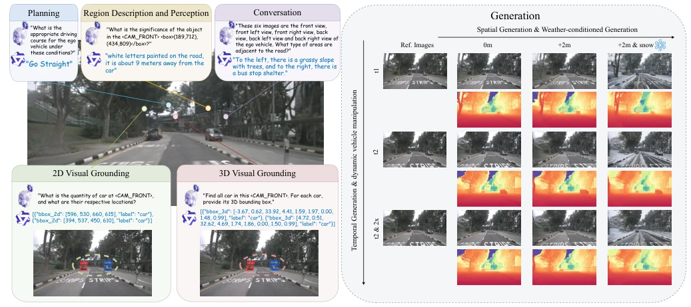
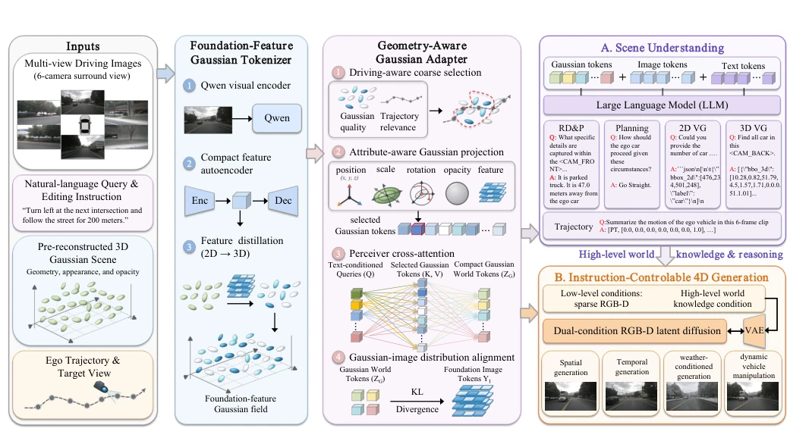
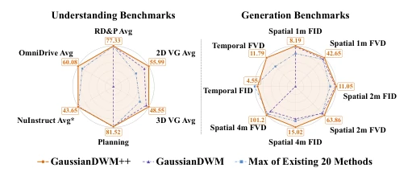
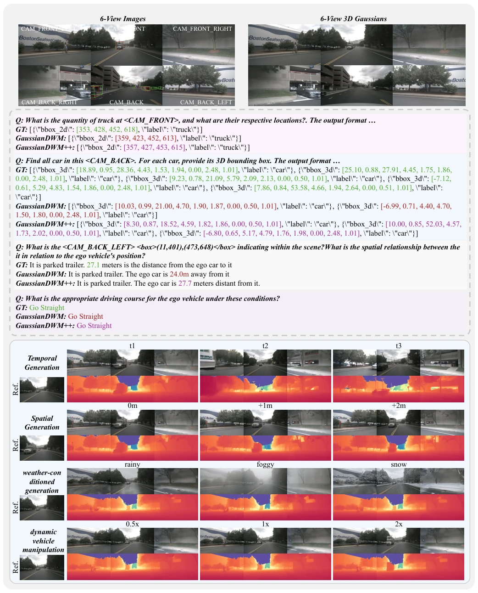
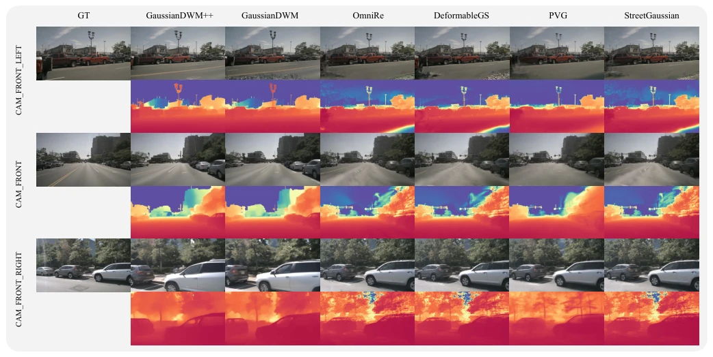

The name GaussianDWM++ sounds like squeezing toothpaste, but forcibly combining 3DGS and DWM does indeed have substance. It attempts to unify scene understanding and generation using Gaussian primitives, understanding 3D geometry better than BEV or Occupancy. However, distilling Qwen features into Gaussians, the computational overhead is feared to be considerable, and it relies on pre-reconstructed Gaussian fields, so end-to-end training is somewhat uncertain. SOTA is SOTA, but what is the deployment cost? Compared to HERMES [8]'s BEV scheme, it solves the semantic alignment problem, but introduces the complexity of Gaussian reconstruction. This counts as adding another layer of "translation" cost in embodied AI, worth observing. Although the paper claims to unify the framework, actual inference latency is not detailed, which may affect real-time performance.
研究动机Motivation
现有 DWM 如 GAIA-1 [12] 和 DriveDreamer-2 [4] 只管生成未来观测，缺乏显式 3D 理解。HERMES [8] 虽整合 VLM，但基于 BEV，语言与 3D 结构对齐粗糙。点云稀疏，Occupancy 离散，难以支持细粒度文本推理。UniScene [6] 虽统一生成，但语义理解弱。需要一种既能显式表达 3D 几何，又能承载语义特征的统一表示，以支持语言驱动的 4D 编辑和规划。现有方法难以同时满足多模态生成和语言推理的精度要求，导致无法直接进行自然语言交互的场景编辑。
Existing DWMs such as GAIA-1 [12] and DriveDreamer-2 [4] only generate future observations, lacking explicit 3D understanding. HERMES [8] integrates VLM but is based on BEV, with rough alignment between language and 3D structure. Point clouds are sparse, Occupancy is discrete, making fine-grained text reasoning difficult. UniScene [6] unifies generation but has weak semantic understanding. A unified representation is needed that can explicitly express 3D geometry and carry semantic features, to support language-driven 4D editing and planning. Existing methods struggle to simultaneously meet the accuracy requirements of multimodal generation and language reasoning, leading to an inability to perform scene editing via direct natural language interaction.

Fig. 2: We propose the unified 3D Gaussian-based world model framework that achieves comprehensive scene understanding and scene generation for driving scenarios. It efficiently encodes complex scenes, samples task-relevant information, and handles diverse question-answering tasks. Moreover, by leveraging the extracted world knowledge, our framework guides the generative model to perform accurate spatial and temporal scene generation.
The overall process is divided into four steps: First, the Foundation-feature Gaussian Tokenizer distills Qwen vision-language features into 3D Gaussian primitives, building an open-vocabulary semantic field, replacing LangSplat. Second, the Geometry-aware Gaussian Adapter uses hierarchical selection (considering trajectory correlation) and Perceiver cross-attention, compressing dense Gaussians into compact world Tokens, solving LLM input length limitations. Third, a KL divergence alignment target is introduced to match the Gaussian Token distribution with Qwen image Tokens, improving compatibility. Finally, the Dual-condition generation module combines low-level geometry conditions and high-level language knowledge, supporting spatiotemporal generation and weather, vehicle editing, maintaining 4D consistency. This design ensures semantic information is not lost and can be transmitted efficiently.

Fig. 3: System Overview. GaussianDWM++ builds a foundation-feature Gaussian field by distilling Qwen visual features into explicit 3D Gaussian primitives. A geometry-aware adapter first performs driving-aware coarse selection and attribute projection. It then combines a pooled text embedding with learned queries and aggregates the selected Gaussian tokens through Perceiver- style cross-attention. A Gaussian–image distribution alignment objective regularizes the resulting world tokens toward the foundation image-token distribution. The compact Gaussian world tokens are shared by the LLM-based scene understanding branch and the dual-condition scene generation branch for high-level world knowledge.
Constructed the NuScenes-GSQA dataset, containing 1000 scenes and QA annotations. Evaluated on NuInteract, NuInstruct, OmniDrive benchmarks. Metrics cover BLEU, ROUGE, FID, FVD, and mAP. Results achieve SOTA on both understanding and generation tasks. Ablation studies prove Adapter and KL alignment are effective. Long-term generation (0-9s) maintains geometric consistency, but no robustness analysis for extreme long-tail scenarios is seen. Compared to GaussianDWM [10], the ++ version is significantly enhanced in feature distillation and generation control. Experiments demonstrate stability under complex weather and dynamic vehicle editing, verifying the framework's generality.

Fig. 1: Overall performance on understanding and gen- eration benchmarks. GaussianDWM++ achieves state-of- the-art performance in both scene understanding and scene generation. Radar radii are normalized as Metrici/Metricmax for understanding and Metricmin/Metrici for generation, so that larger radii indicate better performance. Boxed values show the original GaussianDWM++ results.

Fig. 4: Qualitative results for scene understanding and scene generation. From top to bottom, we display the multi-view input of the current scene and the 3D Gaussian ellipsoids, the scene understanding results, and the results of temporal generation, spatial generation, weather-conditioned generation, and dynamic vehicle manipulation with varying motion speeds.

Fig. 5: Qualitative comparison of RGB-D NVS with a 4 m camera shift. Compared with GaussianDWM and reconstruction- based baselines [44], [45], [74], [75], GaussianDWM++ better preserves broad, continuous scene regions such as road surfaces, with fewer large-area artifacts and more coherent depth structure under large viewpoint changes.